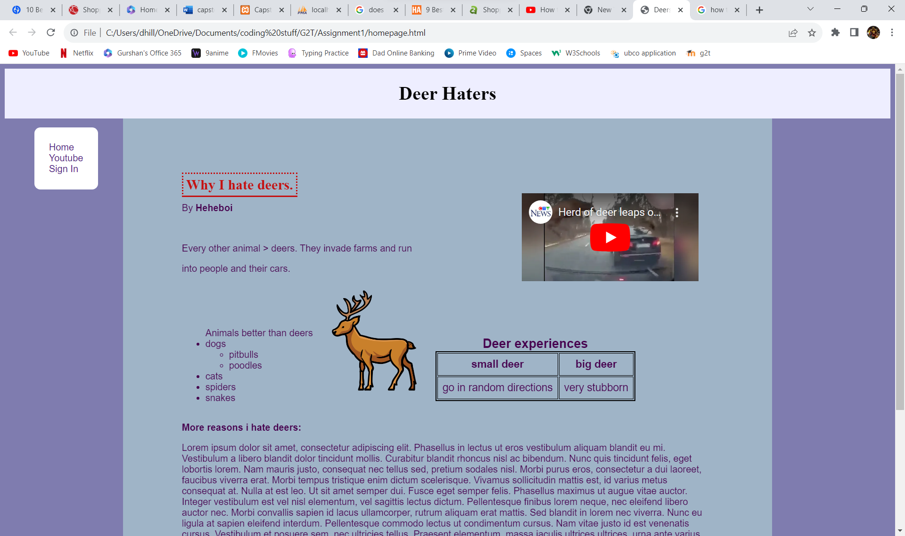

Who: Hypertext Markup Language or better known as HTML, is a language used for describing how a web page is shown in on the users display .
What and How: HTML tags provide the basic building blocks, such as headings, paragraphs, images, and links, organizing content.
When: The core structure of a web page, which defines the arrangement and structure of content, is created using HTML.
Who: Cascading Style Sheets or better known as CSS, affects the appearance and formatting of an HTML document.
What and How: CSS styling rules control the visual presentation of HTML elements, specifying aspects like layout, colors, fonts, and spacing.
When: The ability to make visually appealing and responsive layouts is done by the use of CSS through its web page design and styling abilities.
HTML and CSS work together to produce a cohesive and aesthetically pleasing user experience. HTML creates the structure and CSS provides the visual appearance. All the programmer needs to figure out is what HTML and CSS elements are needed to suite their needs.
HTML and CSS writing wise are the most different from my past coding experience, however they were still quite simple to understand. HTML tags were straight forward along with CSS styling but CSS was a little tedious at times. Coding with CSS, You need to have exellent creative thinking skils. While Coding with CSS, my creative thinking skills developed the more familiar I got with the language. However, it all depends on your needs, the example shown is my first assignment at G2T which only had to follow a guideline of certain elements to include.
While we were still learning about the languages, I could not think of what to code it on. So, I took to my mentor and his advice was to do it on the next thing that came to my mind as the design did not matter in the assignment. My family owns a cherry orchard, and I am always up to assist my parents with it, so my grandpa told me to go chase the Deers away as they are always eating at the crop. My brain clicked and I knew what the site was going to be about. I do not actually hate Deers though; the design is supposed to be goofy and satire. The main part of CSS that made it tedious was that it can be stubborn at times as certain elements would disregard, overlap, or misplace others. Overall, my experience with learning and coding with these languages was pretty solid even if my design choices for the example weren't the best.
This is the navigation bar that is shown in the image of my first assignment. There are many different things styling it position and helpful attributes. The background colour is self explanitory, the position being set to fixed causes it to stay on the same position of the screen no matter how far you scroll. The margin is the space on the outside of the object, by giving a value to it, it creates a gap between it and the surrounding objects. The float being set to right pushes it to the right of the area it can be in. This was a clear mistake as I am realizing now which luckily did not affect the layout. The padding is the area from the border to the inner object, it is what creates the gap all around the links. List style none equates to there being no dots on each item of the list. instead of looking like a regular point form list, it removed the dots.
Border radius creates the rounded corners on the border. With the HTML, the navigation bar is placed in an unorderd list and the id navigation is what adds the CSS to it. Each link is put in a Li(list item) and the links themselves are displayed with the a href tags.